הסקיצות הורכבו מהנכסים והצילומים האמיתיים של האפליקציה (לא ציורי דמיון), והמספרים (קבצי נתונים, פתירות, מדדי קריאוּת) נמדדו על המנועים האמיתיים בענף main (4fcf363). כלום לא נכתב לקוד האפליקציה. הצעדים הבאים אחרי אישור שלך: סעיף אחרי סעיף, כל אחד ב-PR נפרד.
סיכום1 · כפתורים שחורים2 · סודוקו3 · מהג׳ונג4 · מסך הבית5 · לוחות שש בש6 · כלי שחמטפאנל ניהולשאלות פתוחות
| # | סעיף | החלטה מרכזית | שליטה מפאנל הניהול | הערכת עבודה |
|---|---|---|---|---|
| 1 | שש בש: כפתורים חומים ← שחורים | שני וריאנטים לבחירה (A שחור עם טבעת נחושת/פליז, B שחור מבריק מלא ללא טבעת). רק שש בש, שאר המשחקים לא נוגעים. | אופציונלי games.backgammon.controlStyle (שחור/פליז) להחזרה מהירה | 0.5–1 יום |
| 2 | סודוקו: שלבים 1..∞, בלי בחירת קושי | 6 רמות (מתחיל · קל · בינוני · קשה · מומחה · אלוף). שלב N קבוע לכולם: מאגר קפוא + טרנספורמציה לפי זרע. התקדמות חדשה v2. | כן משקלי רמות, יעדי כוכבים, XP/מטבעות, רמת האתגר היומי לכל יום | 6–7 ימים |
| 3 | מהג׳ונג: שלבים 1..∞, בלי בחירת קושי | 6 דרגות 60/66/72/78/84/90 אבנים, 12 פריסות פתירות מובטחות (2 לדרגה) + היפוך מראה, זרע לכל שלב. התקדמות חדשה v3. | כן משקלי דרגות, עזרים (ערבוב/רמז) לדרגה, כיבוי פריסה בודדת, יעדי כוכבים | 5–6 ימים |
| 4 | מסך הבית: רשת 2 בשורה | 5 משחקים + תא שישי = אתגר יומי (או דוראק ממורכז, שאלה פתוחה). 3 עמודות בלנדסקייפ/טאבלט. אומנות האריחים כמפתחות תמונה חדשים. | כבר קיים סדר וכיבוי (games.order/disabled) + החלפת תמונת אריח (מנגנון התמונות הקיים) | 1–1.5 יום |
| 5 | שש בש: 4 ערכות צבעים חדשות | Midnight Blue · Casino Ruby · Sand & Maple · Amethyst (+ הקלאסית הנוכחית). ערכה = חבילת טוקנים, לא תמונות חדשות. | כן games.backgammon.boardScheme בחירה בכרטיסי רדיו, + עריכת צבע בודד בעמוד ערכת הנושא | 1–1.5 יום |
| 6 | שחמט: ערכות כלים שנבדלות | 4 ערכות חדשות ברישיון נקי: Chessnut (Apache-2.0), Celtic · Spatial · Fantasy (MIT). נבדקה קריאות מספרית. | כן games.chess.pieceSet (ברירת מחדל לכולם) | 2.5 ימים |
סה״כ ≈ 17–20 ימי עבודה אם ברצף. סעיפים 1, 4, 5, 6 בלתי תלויים זה בזה וניתנים להרצה במקביל. 2 ו-3 חולקים תבנית (רמות/זרע/התקדמות v2) ולכן כדאי שאותו עובד יעשה את שניהם. כל סעיף נוגע ב-games.* של הקונפיג המשותף (חבילת gametime_config + עמוד המשחקים בפאנל), לכן כדאי לשלב אחרי ענף durak-deck כדי לא ליצור קונפליקטים באותם קבצים.
היקף: שש בש בלבד. הכפתורים העגולים ("מטבעות") שמשתנים: שורת הפעולות בתחתית (הגדרות, קוביות, בטל, סטטיסטיקה) וכפתור החזרה למעלה. לוחיות השמות, הקוביות והלוח נשארים כמו שהם. הנכסים הקיימים ui/coin_dark_* ו-ui/*_emboss כבר מכילים מצב כהה, ולכן לא נדרש ציור חדש מאפס אלא צבע/גימור חדש.
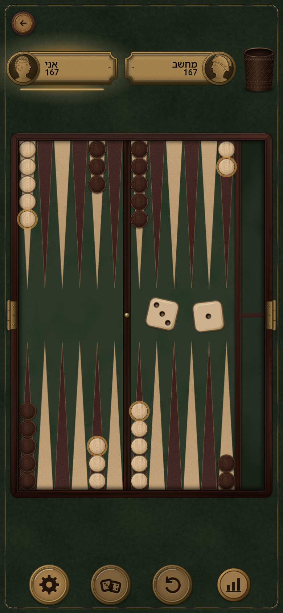
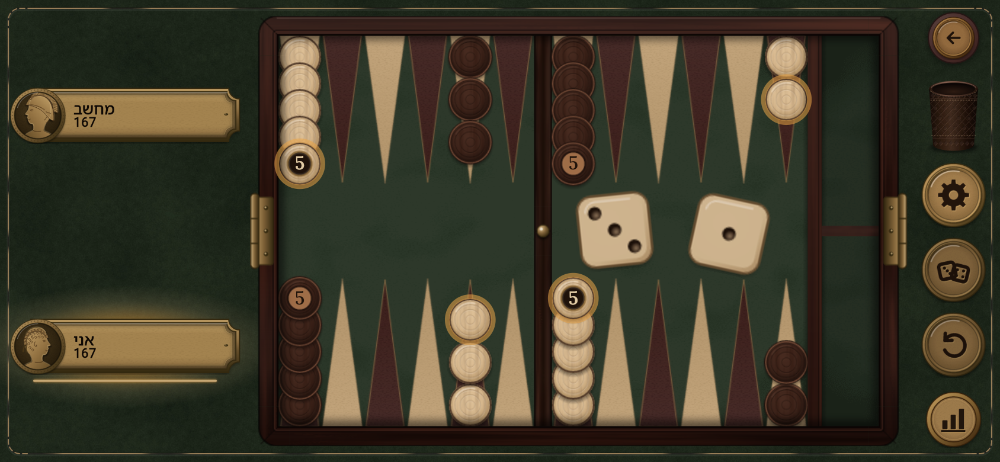
פנים שחור־פחם, טבעת נחושת/פליז דקה ואייקון זהב. שומר על שפת העיצוב של שאר האפליקציה (מסגרות פליז, לוחיות השמות) והכפתור בולט על הלוח הירוק.
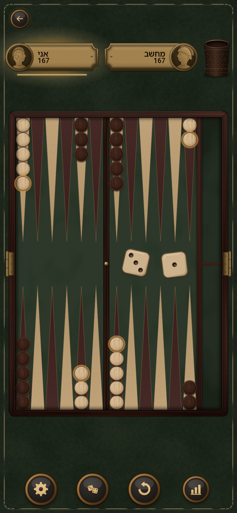
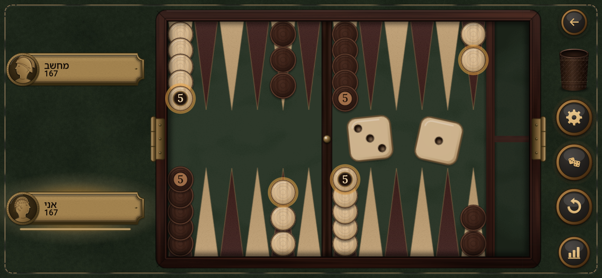
כפתור שחור מלא עם ברק עדין, בלי טבעת, ואייקון בהיר. נקי ומודרני יותר, אך מתנתק מהפליז של שאר המסך.
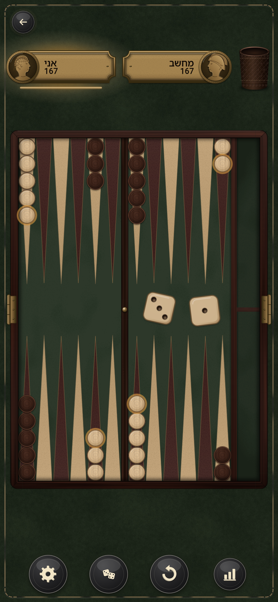
BoardCoinButton וקבוצת הכפתורים); מוחלף רק הסגנון, בתוך מסך שש בש בלבד, כך ששחמט/סודוקו/מהג׳ונג/דוראק לא משתנים. רגרסיה נבדקת בצילומי מסך (לאורך/לרוחב, עברית ואנגלית). אם נבחר controlStyle בפאנל, ברירת המחדל = שחור.אין יותר בחירת קושי ואין 80 השלבים הקיימים. מסך אחד: שלב N. הרמה של כל שלב נקבעת אקראית אך קבועה (שלב 57 הוא אותו פאזל לכל השחקנים בכל מכשיר, ולכן אפשר להשוות כוכבים וזמנים). הוספנו שתי רמות לארבע הקיימות.
| רמה | רמזים (נתונים) | טכניקות נדרשות | ציון דירוג (מנוע הקיים) | יעד 3 כוכבים | מיפוי XP/מטבעות | מקור |
|---|---|---|---|---|---|---|
| 1 מתחיל | 46–50 | סינגל בלבד (חשוף וטבלה) | ~35 ומטה | 4 דק׳ | beginner | חדשה |
| 2 קל | 36–43 | סינגלים, כמעט בלי חיפוש | 38–45 | 6 דק׳ | easy | קיימת |
| 3 בינוני | ~28 | מצביע/תובע (pointing/claiming), זוגות | 61–99 | 10 דק׳ | medium | קיימת |
| 4 קשה | 22–27 | שלשות, X-wing | 101–165 | 15 דק׳ | hard | קיימת |
| 5 מומחה | 22–27 | XY/XYZ-wing, רביעיות, סורדפיש | 166–249 | 25 דק׳ | hard ×1.2 | קיימת (חצי תחתון) |
| 6 אלוף | 22–26 | אותן טכניקות, אבל 2–3 צעדי מומחה ברצף | ≥250 | 35 דק׳ | hard ×1.5 | חדשה (חצי עליון) |
הנתונים נמדדו על הטבלה הקפואה הקיימת (easy 36–43 רמזים וציון 38–45; medium 28 וציון 61–99; hard 22–27 וציון 101–165; expert 22–27 וציון 166–427) ועל 1,200 זרעים של expert: ציון ≥200 ב-17.5%, ≥250 ב-4.6%, ≥300 ב-1.25%. לכן "אלוף" = ציון ≥250. ה-XP/מטבעות מתמפים ל-4 הערכים הקיימים של GameDifficulty (בשרת ובכללי Firestore אין שינוי), והכפל לרמות 5–6 מגיע מהקונפיג.
יעדי הזמנים בטבלה הם הצעה ראשונית (אני מניח שהקיימים 6/10/15/25 דק׳); כוונון לפי נתוני משחק.
assets/sudoku/pool_v2.json, 6 רמות × 200 = 1,200 פאזלים (מחרוזת 81 תווים ל-givens; הפתרון מחושב בטעינה במילישניות). נוצר בכלי offline אחד (tool/gen_sudoku_pool.dart) עם המנוע והמדרג הקיימים. עלות: "מתחיל" מיידי; "אלוף" ≈ 0.4 שנ׳ לפאזל, כלומר דקות בודדות לכל הסט. גודל ≈ 100KB. בדיקת hash בטסט מונעת שינוי בטעות (המאגר append-only: הרחבה לא משנה שלבים קיימים).scheduleVersion שנשמרת בשלב שנפתח.| נתון | היום | אחרי השינוי |
|---|---|---|
| התקדמות שלבים | sudoku_progress_v1 (80 שלבים) | sudoku_progress_v2 = {v:2, scheduleVersion, levels:{N:{stars,bestMs}}}. שלב N+1 נפתח כשN הושלם. v1 נשמר בארכיון (לא נמחק; בניות ישנות מתעלמות מv2). |
| משחק שמור באמצע | sudoku_game_v1_<id> | sudoku_game_v2_<N>. משחקים שמורים ישנים נזרקים בפעם הראשונה (הודעה חד־פעמית). |
| סטטיסטיקות, XP, מטבעות, הישגים | מערכת ההתקדמות (לפי משחק, בענן/מקומי) | נשמרים כמו שהם (לא תלויים ברשומות השלבים). הרמות 5–6 מדווחות כ-hard. |
| קידומת מחיקת חשבון | sudoku_ ב-LocalAccountData | המפתחות החדשים מתחילים באותה קידומת, ולכן נמחקים אוטומטית, בלי שינוי. |
| אתגר יומי | sudoku_daily_v1, רמה מסתובבת | נשאר בנפרד מהשלבים, אך נשלף מאותו מאגר ב-6 הרמות לפי יום בשבוע: א׳ אלוף · ב׳ קל · ג׳ בינוני · ד׳ בינוני · ה׳ קשה · ו׳ קשה · ש׳ מומחה (ניתן לעריכה בפאנל). מפתח המשחק השמור כולל את הרמה, ולכן מתאים לשתי הרמות החדשות בלי שבירה. |
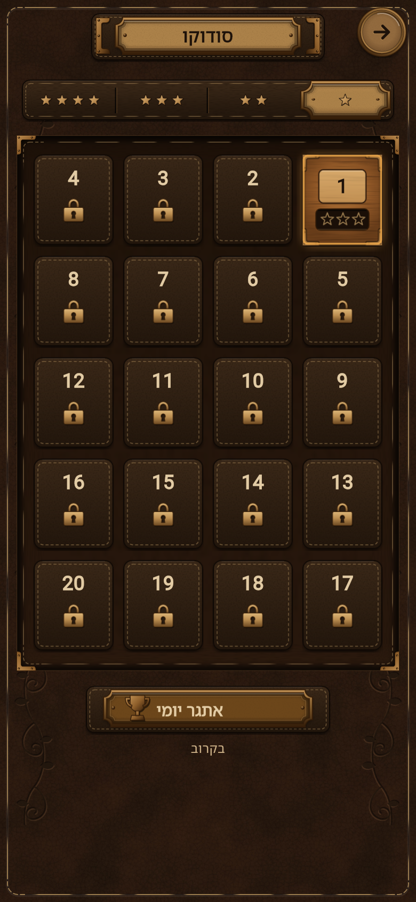
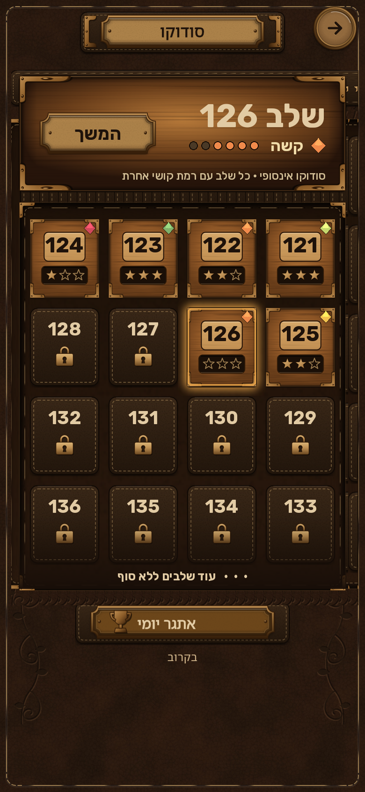
שלבים שלא הושלמו ואחרי הנוכחי מוצגים נעולים; מציגים בעשרות הקרובות בלבד כדי שהרשימה האינסופית לא תהיה כבדה. אפשר לקפוץ ל"שלב N" ידנית רק לשלבים שנפתחו.
| מה נדרש (קוד) | הערכה |
|---|---|
| כלי יצירת מאגר + 2 רמות חדשות במדרג/גנרטור (minClues למתחיל, סף ציון לאלוף) | 1.5–2 ימים |
| מנוע שלבים (זרע, רמה, מעקות, טרנספורמציה) + טסטים (דטרמיניזם, יחידות פתרון, hash) | 1.5 יום |
| התקדמות v2 + שמירת משחק + הגירה (+ ארכיון v1) | 1 יום |
| מסך שלבים חדש (עברית/אנגלית + 3 שפות נוספות), הסרת בחירת קושי, ניתוב אתגר יומי | 1.5 יום |
| קונפיג ופאנל (משקלים, יעדים, יומי) | 0.5 יום |
אותו מודל כמו סודוקו: אין בחירת קושי, שלב N קבוע, רמת קושי אקראית לשלב, הקלה ביותר 60 אבנים והקשה ביותר 90, ופריסה אקראית לשלב. הקושי כאן נקבע בעיקר ממספר האבנים (ועוד שכבות, ועזרים מוגבלים יותר).
| דרגה | אבנים | פריסות (2 לדרגה) | ערבוב/רמז (הצעה) | יעד 3 כוכבים (הצעה) | משקל |
|---|---|---|---|---|---|
| 1 | 60 | פירמידה · מתומן | 3 / 5 | 4:00 | 18 |
| 2 | 66 | כוכב · כיפה | 3 / 5 | 4:24 | 24 |
| 3 | 72 | טבעת · מצודה | 2 / 4 | 4:48 | 26 |
| 4 | 78 | פרפר · שעון חול | 2 / 4 | 5:12 | 18 |
| 5 | 84 | יהלום · מתומן גדול | 1 / 3 | 5:36 | 10 |
| 6 | 90 | לב · אליפסה | 1 / 3 | 6:00 | 4 |
המשקלים והמעקות כמו בסודוקו (שלבים 1–3: דרגה 1, 1, 2; ללא שתי דרגות 5–6 ברצף). יעד 3 כוכבים = 8 שניות לזוג.
MahjongDealer עם MahjongRandom(seed)MahjongLayout.custom. גודל מרבי 10×8 אבנים, ולכן האבן נשארת גדולה במסך לאורך. הגדלת אבן אוטומטית לפי הפריסה.| פריסה | אבנים | שכבות | פתירות | ניצחון במשחק אקראי | זוגות חופשיים בממוצע בתחילה |
|---|---|---|---|---|---|
| פירמידה | 60 | 3 | 300/300 | 67% | 10 |
| מתומן | 60 | 3 | 300/300 | 57% | 16 |
| כוכב | 66 | 2 | 300/300 | 66% | 25 |
| כיפה | 66 | 4 | 300/300 | 67% | 22 |
| טבעת | 72 | 2 | 300/300 | 79% | 37 |
| מצודה | 72 | 3 | 300/300 | 59% | 21 |
| פרפר | 78 | 3 | 300/300 | 42% | 28 |
| שעון חול | 78 | 3 | 300/300 | 69% | 23 |
| יהלום | 84 | 2 | 300/300 | 50% | 17 |
| מתומן גדול | 84 | 3 | 300/300 | 54% | 15 |
| לב | 90 | 2 | 300/300 | 49% | 20 |
| אליפסה | 90 | 2 | 300/300 | 55% | 16 |
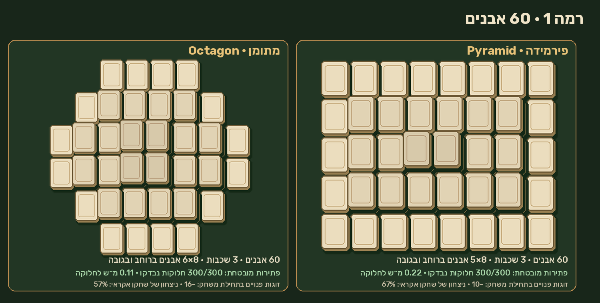
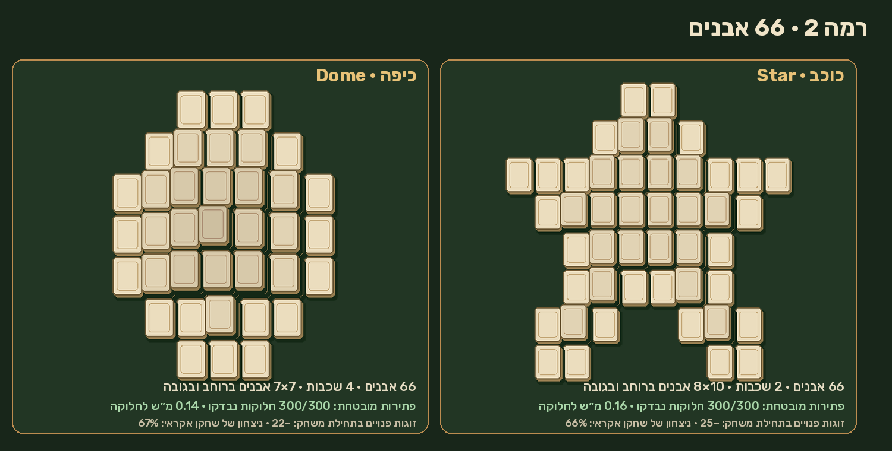
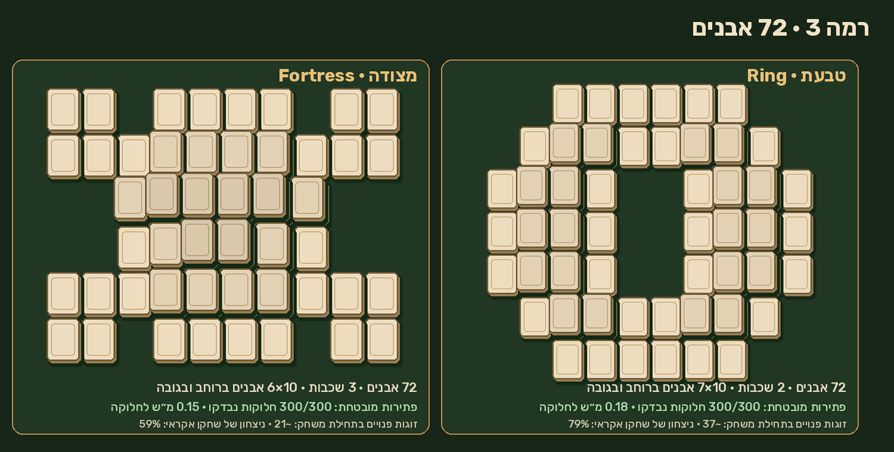
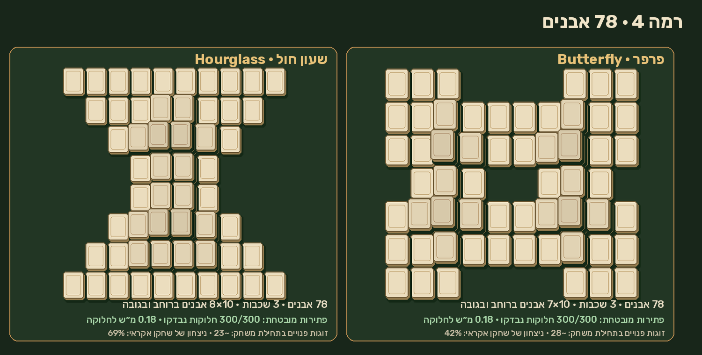
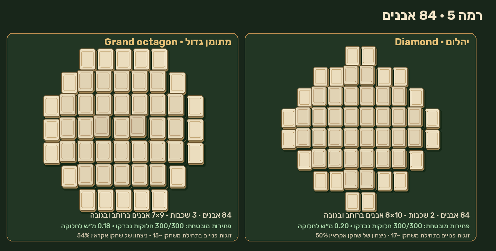
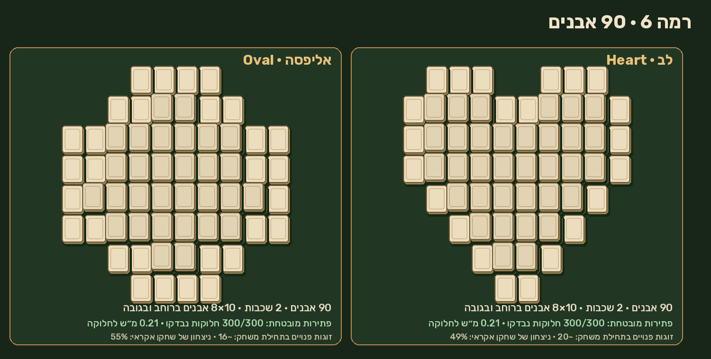
האבנים הכהות יותר בציור = שכבה גבוהה. הנתונים המלאים (משבצות ביחידות חצי אבן + מפות גובה) ב-mj_layouts.json אצלי ויועברו לקוד כקובץ נתונים.
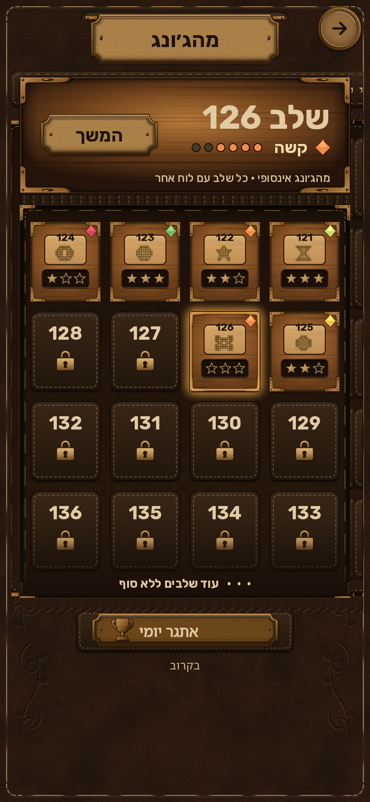
| שמירה והגירה | |
|---|---|
| התקדמות | מפתח חדש mahjong_levels_v3 ({v:3,levels:{N:{stars,bestMs}}}). mahjong_progress_v1 לא נוגעים בו (ארכיון, לא נמחק) כדי שגרסה ישנה לא תיפגע. |
| משחק שמור | מפתח חדש לפי N; ישנים נזרקים עם הודעה חד־פעמית. |
| סטטיסטיקות/XP | נשמרים. דרגות 1–6 ← beginner/easy/medium/hard/hard/hard. |
| אתגר יומי | נשאר עם הפריסה "ביתן" הקיימת (98 אבנים); לא חלק מרצף השלבים. |
| מה נדרש (קוד) | הערכה |
|---|---|
| 12 פריסות כקובץ נתונים + טסטי גאומטריה/פתירות + התאמת גודל אבן למסך (10×8) | 1.5 יום |
| מנוע שלבים (זרע/דרגה/פריסה/מראה) + טסטי דטרמיניזם | 1 יום |
| התקדמות v3 + שמירה + הגירה | 1 יום |
| מסך שלבים חדש + ניתוב + הסרת בחירת קושי + 5 השפות | 1.5 יום |
| כיול עזרים/כוכבים, קונפיג ופאנל | 1 יום |
כל משחק = אריח גדול וקריא: אומנות המשחק (ה-hero הקיימת של כל משחק), שם בעברית מודגש (≥18sp), ושורת משנה קצרה. ברשת: (מימין לשמאל, כמו בעברית) שורה 1 שש בש · שחמט, שורה 2 סודוקו · מהג׳ונג, שורה 3 דוראק + תא שישי = האתגר היומי (שאלה פתוחה: דוראק ממורכז במקום).
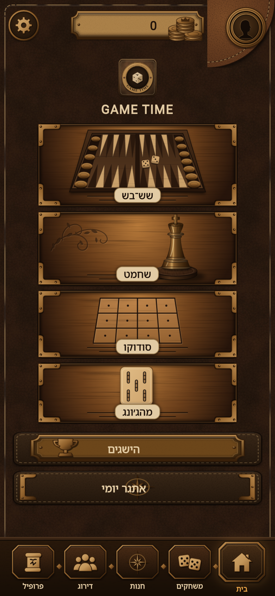
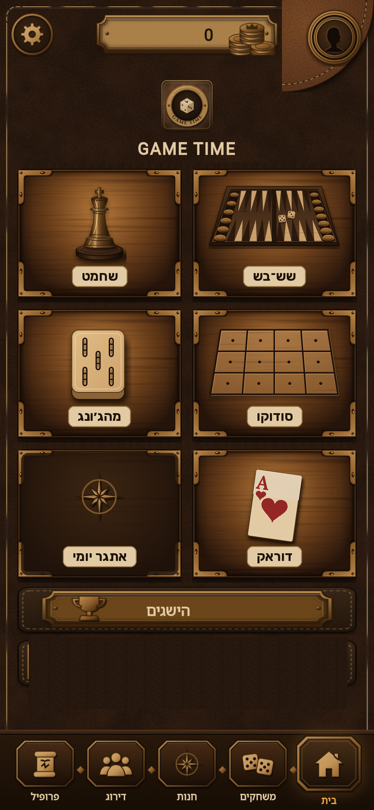
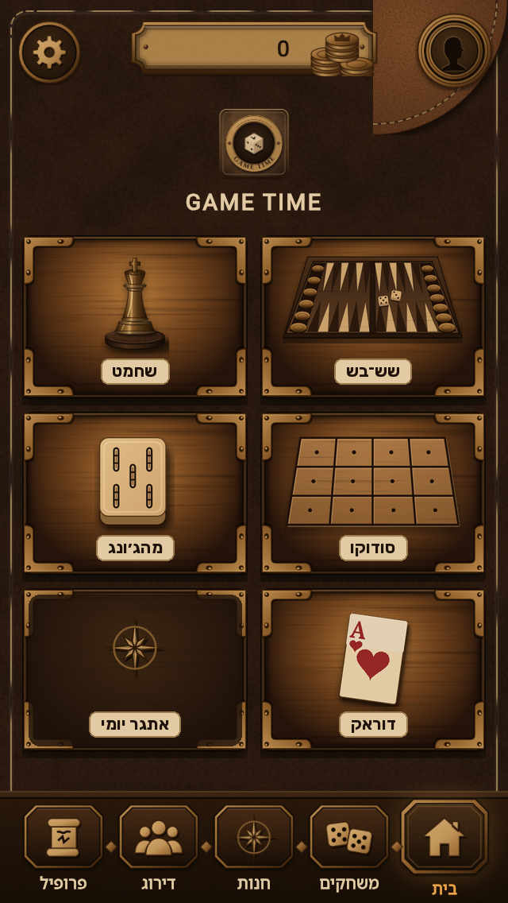
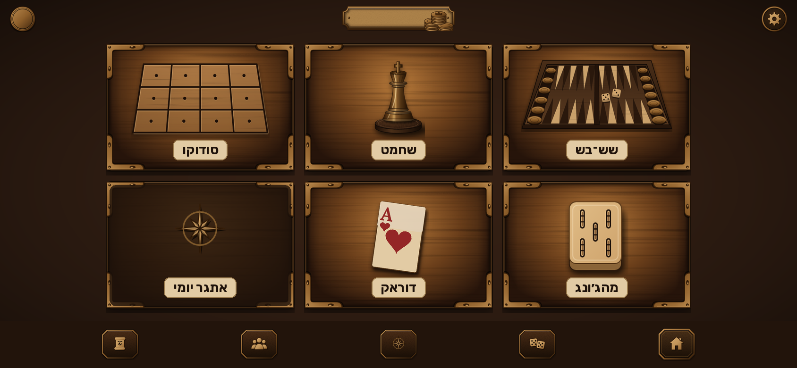
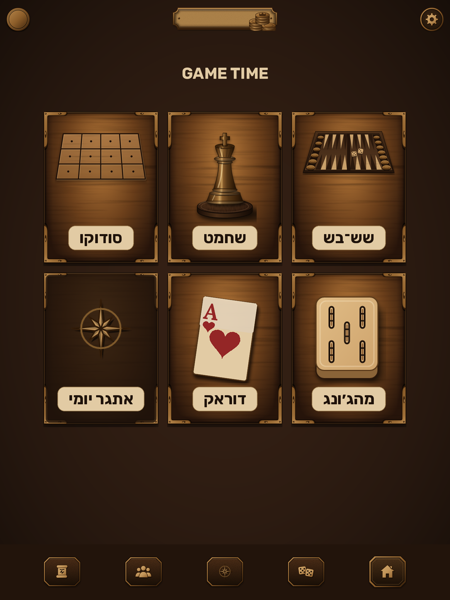
Directionality של האפליקציה ולא עם "שמאל/ימין" קבועים: בשפות RTL (עברית, ערבית) אריח 1 נמצא בצד ימין של שורה 1; באנגלית/רוסית/ספרדית הסדר מתהפך (אריח 1 משמאל). הסקיצות בעברית. הטקסט ממורכז בתוך האריח ולכן לא תלוי בכיוון; ריפודים עם EdgeInsetsDirectional. שם משחק ארוך (למשל בספרדית) מקבל שתי שורות בלי לחתוך.games.order בפאנל. סדר וכיבוי משחק מהפאנל (games.order / disabled) פועלים על הרשת כמו היום; משחק כבוי פשוט נעלם והרשת מסתדרת מחדש (במספר אי־זוגי התא האחרון מקבל את התא היומי או מרכוז).home.tile.<game> עם ברירת מחדל מהאומנות הקיימת, ניתנים להחלפה בפאנל במנגנון התמונות הקיים. תמונות home.card.* שכבר הוחלפו בפאנל נשארות כ-fallback.| מה נדרש | הערכה |
|---|---|
| ווידג׳ט רשת + אריח + אומנות לכל משחק + תא יומי + טסטי ווידג׳ט וצילומי מסך 5 השפות/3 גדלים + מפתחות תמונה בפאנל | 1–1.5 יום |
כל ערכה מגדירה: לוח (felt), משולשים (נקודות) בשני גוונים, אבני המשחק (בהירות/כהות), מסגרת ופליז. הנכסים (עץ, צלעות, הצללות) נשארים, והצבע מגיע מתוך artTint (כפל ערוצים) על טוקני הערכה, ולכן אין נכסים חדשים ואין תוספת משקל לאפליקציה. הסקיצות מציגות לאורך + לרוחב לכל ערכה.
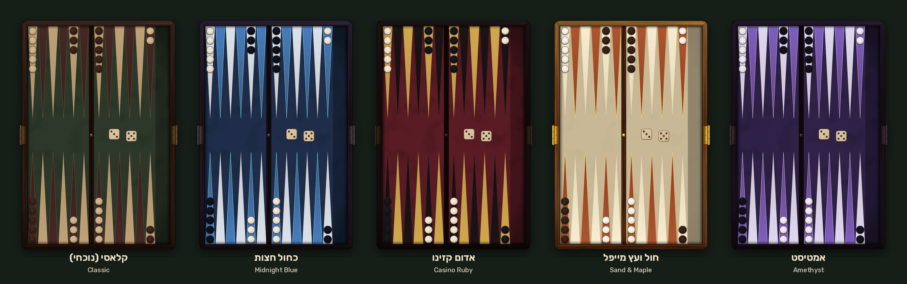
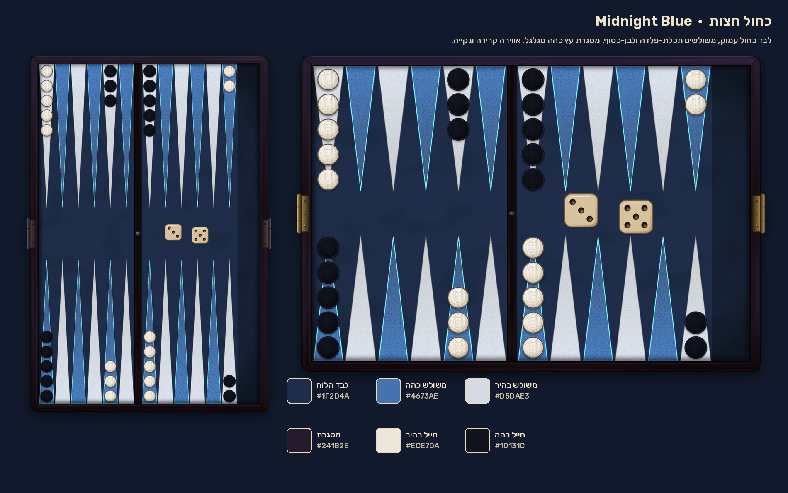
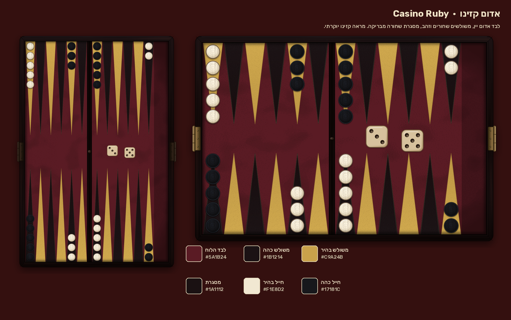
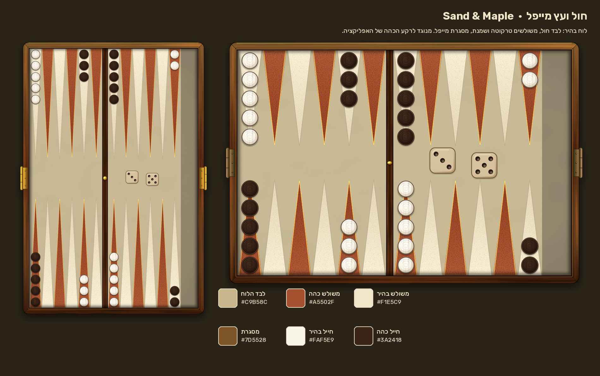
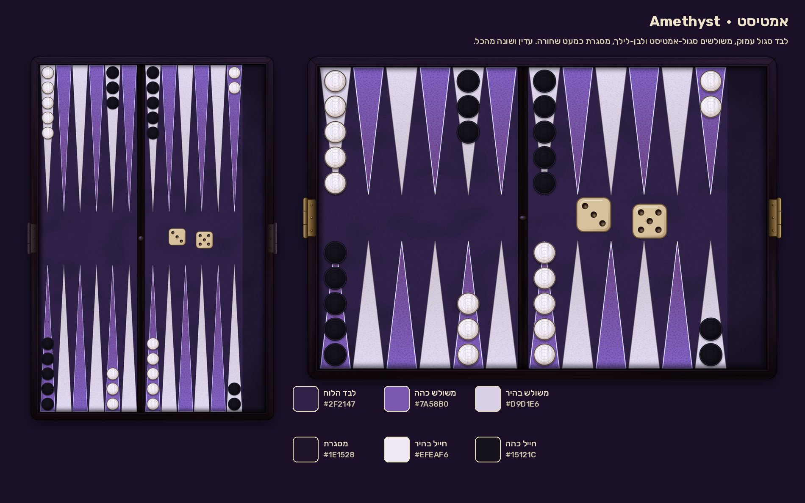
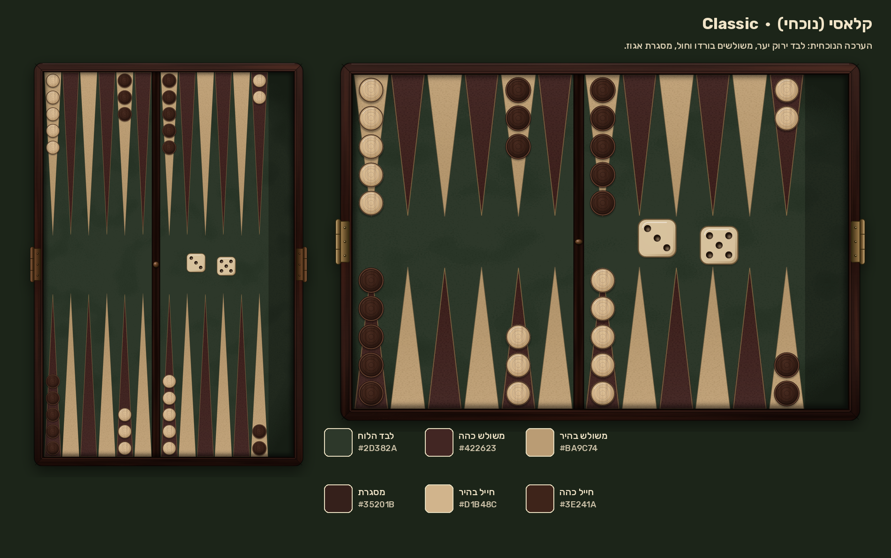
BoardScheme (id + טוקנים) בקוד, בדומה למנגנון הטוקנים של classic_wood. הנקודות/אבנים/הלוח מתכווצים ב-tint לפי הערכה.games.backgammon.boardScheme ∈ classic|midnight|ruby|sand|amethyst. ערך לא מוכר ← classic.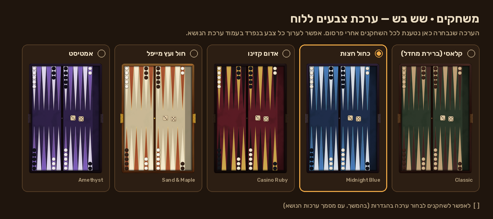
| מה נדרש | הערכה |
|---|---|
| מודל ערכות + חיווט בציור הלוח + טסטים/צילומי מסך (5 ערכות × 2 כיוונים) + קונפיג ופאנל | 1–1.5 יום |
| ערכה | חפיפת צללית מלך–מלכה | ממוצע חפיפה בין זוגות (נמוך = ברור) |
|---|---|---|
| נוכחי (עץ) | 0.851 | 0.725 |
| Chessnut | 0.730 | 0.614 |
| Celtic | 0.713 | 0.594 |
| Fantasy | 0.736 | 0.565 |
| Spatial | 0.682 | 0.489 |
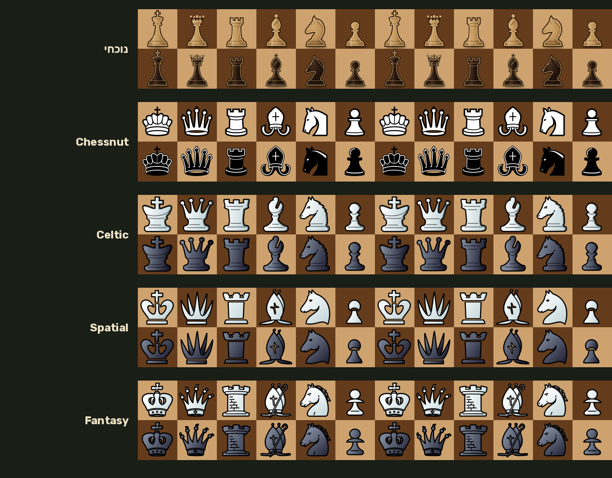
| ערכה | אופי | רישיון (נבדק מול lila/COPYING.md ומאגר המקור) | חובה |
|---|---|---|---|
| Chessnut | קלאסית נקייה, קווים עבים | Apache-2.0 | הודעת זכויות + נוסח רישיון במסך קרדיטים |
| Celtic | סטאונטון רך, צורות עגולות | MIT | הודעת זכויות במסך קרדיטים |
| Spatial | מודרנית־גאומטרית, הכי נבדלת | MIT | כנ״ל |
| Fantasy | מעוטרת, כל כלי עם אופי | MIT | כנ״ל |
נפסלו: cburnett ו-merida (GPL), כל הערכות CC BY-NC-SA (אסור במסחרי), Firi/kiwen (CC BY 4.0; כשרות אבל סימני יד מוזרים), RhosGFX (CC0 אך חפיפת הצללית בין הכלים גרועה אפילו מהנוכחית), ערכת governor (רישיון לא ברור). אם תרצו תוספת: Firi/kiwen דורשות קרדיט.
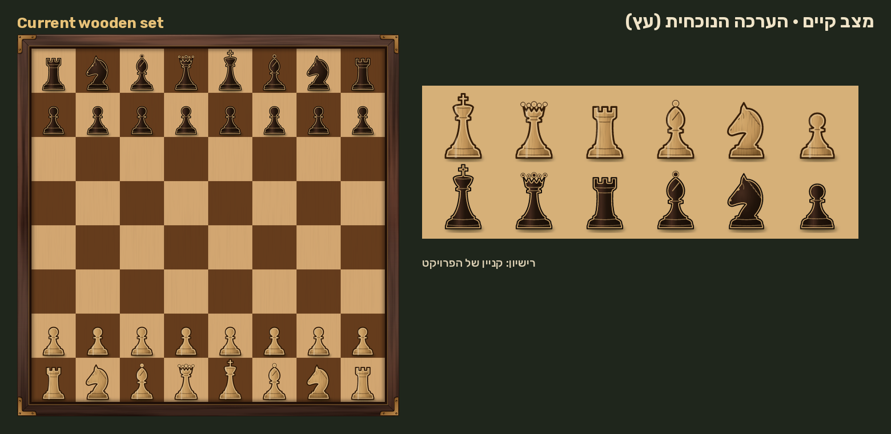
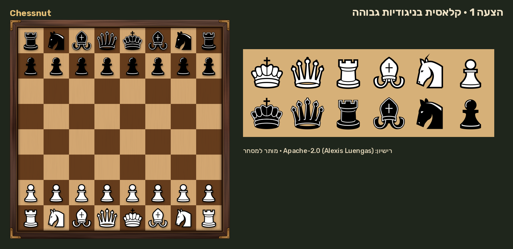
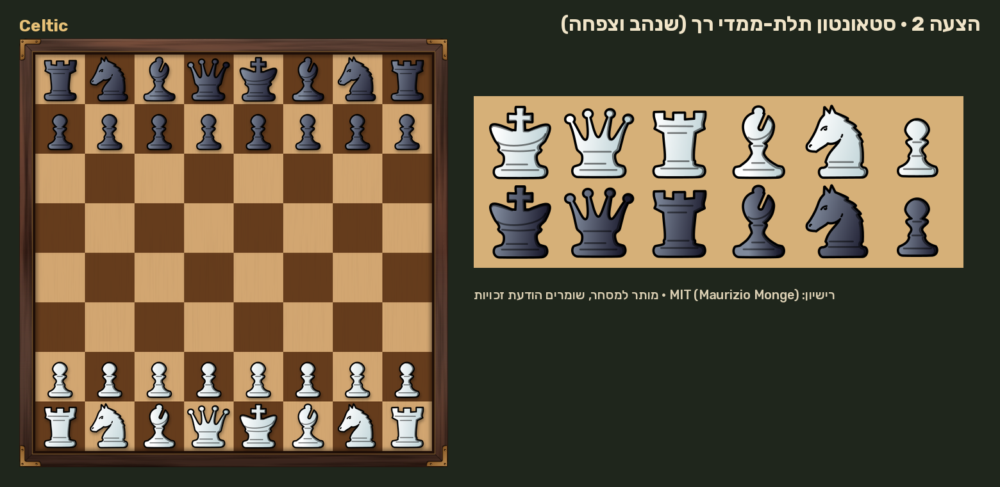
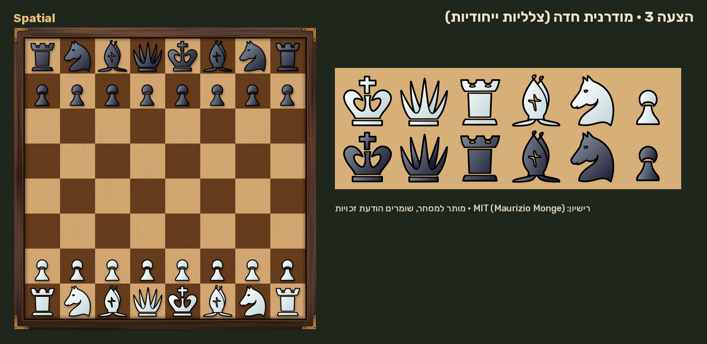
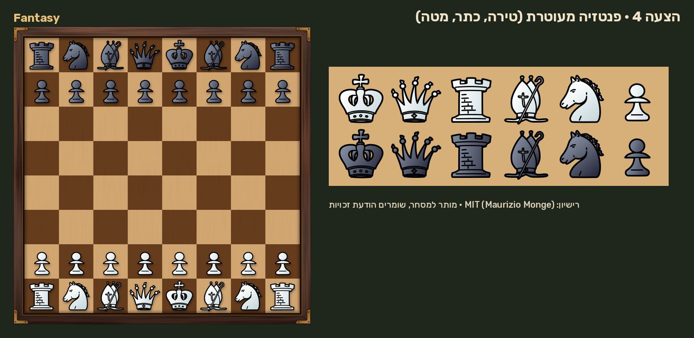
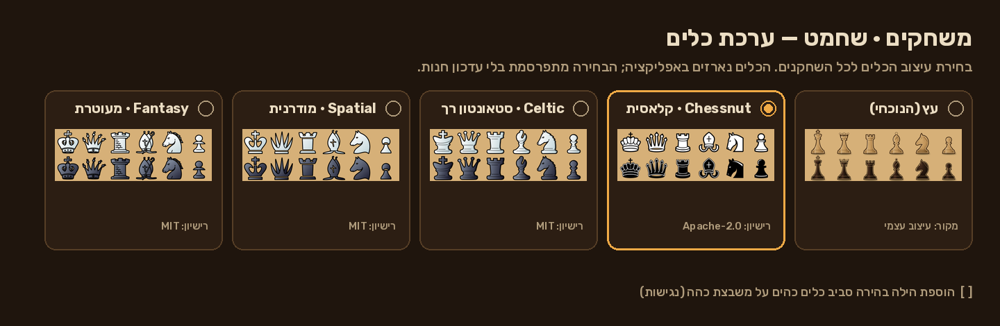
games.chess.pieceSet)themeImage) ולכן גם הפאנל יכול להחליף כלי בודד.| מה נדרש | הערכה |
|---|---|
| המרת SVG, מיפוי מפתחות, בורר ערכה + קונפיג + פאנל, מסך קרדיטים, טסטי נכסים וצילומי מסך | 2.5 ימים |
הפאנל הקיים כבר שולט ב-games.order, games.disabled, games.backgammon.bearOffPosition, games.durak.*. הדפוס: ערך ברירת מחדל לכולם דרך הקונפיג המפורסם, ללא שחרור גרסה. כל הוספה כאן = שדה ב-gametime_config + אימות צורה (ערך לא מוכר ← ברירת מחדל) + כרטיס בעמוד "משחקים".
| סעיף | שדה מוצע | ערכים |
|---|---|---|
| 1 | games.backgammon.controlStyle | black (ברירת מחדל) | brass |
| 2 | games.sudoku.tierWeights, starTargetsMin, xpMultiplier, dailyTierByWeekday | משקלים, דקות, מכפילים, 7 רמות |
| 3 | games.mahjong.tierWeights, aidsByTier, disabledLayouts, starTargetsSec | משקלים, ערבוב/רמז, מזהי פריסות |
| 4 | games.order/disabled (קיים), תמונות home.tile.*, app.homeGrid.dailyTile | סדר, כיבוי, תמונה, תא יומי כן/לא |
| 5 | games.backgammon.boardScheme | classic|midnight|ruby|sand|amethyst |
| 6 | games.chess.pieceSet, games.chess.darkPieceHalo | current|chessnut|celtic|spatial|fantasy, כן/לא |
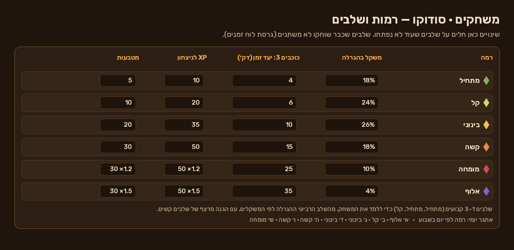
שינוי משקלים בפאנל משפיע על שלבים שטרם נפתחו בלבד (גרסת לוח זמנים). שינוי בפאנל לא יכול לשבור שלב שכבר שוחק.
קרדיטים (מסך חדש): נדרש רק להודעות Apache/MIT של 4 הערכות; הוספת ערכת CC BY תחייב גם שורת קרדיט לכל מחבר.
חומר הגלם והסקריפטים נמצאים בתיקיית העבודה של הבוט (לא ב-repo). מסמך זה נוצר ב-28.11.2026 (שעון ניו יורק).